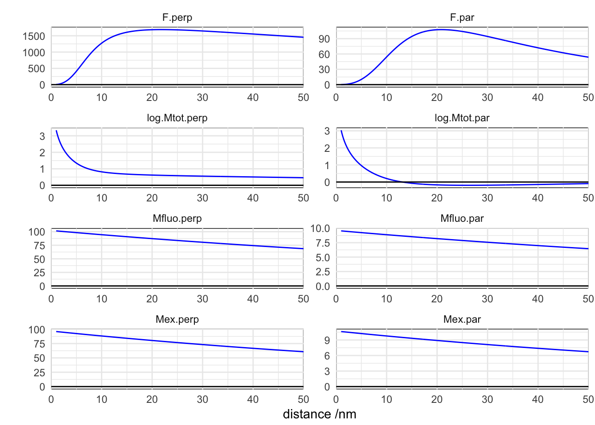
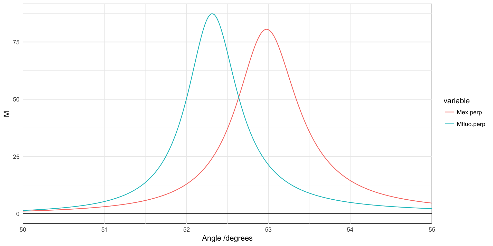
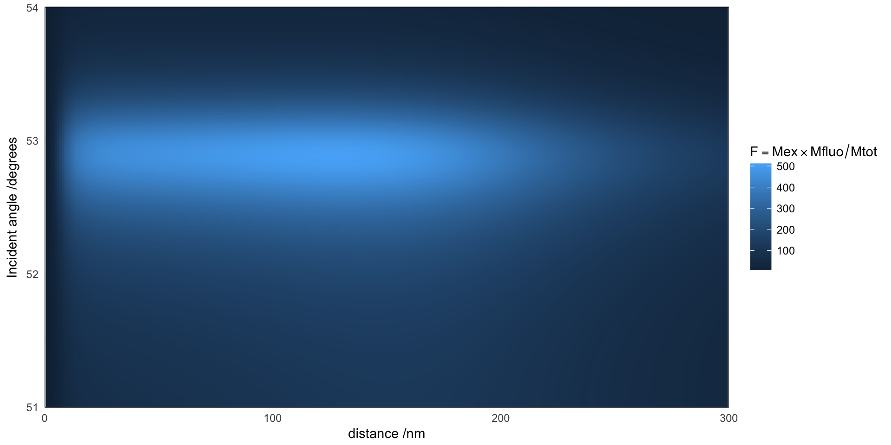

Molecules in the vicinity of the metal surface experience a higher local field due to the excitation of SPPs, but also a possible quenching of the fluorescence emission as the non-radiative decay rate increases dramatically at short distances. Here we look at the relative contributions of the two effects as a function of distance and incident angle.
## from left to right
## incident glass | metal | water
## local field enhancement for the excitation of the fluorophore
model <- function(d=seq(1,10),
lambdaex=632.8,
shift=1000,
thetaex=seq(50,55)*pi/180,
thetafluo=thetaex,
nPrism = 1.766,
nWater = 1.33,
material = "silver",
polarisation="p",
thickness = c(0, 50, 0),
Nquadrature1 = 200, Nquadrature2 = 500,
Nquadrature3 = 500,
qcut = NULL, rel.err= 1e-1,
GL=TRUE){
lambdafluo <- as.vector(raman_shift(lambdaex, shift))
epsilon.ex <- if(material == "silver") epsAg(lambdaex)$epsilon else epsAu(lambdaex)$epsilon
epsilon.fluo <- if(material == "silver") epsAg(lambdafluo)$epsilon else epsAu(lambdafluo)$epsilon
Mex <- multilayer(wavelength = lambdaex, angle = thetaex, polarisation = polarisation,
thickness = thickness, d = d,
epsilon = list(nPrism^2, epsilon.ex, nWater^2))
Mfluo <- multilayer(wavelength = lambdafluo, angle = thetafluo,
polarisation = polarisation,
thickness = thickness, d=d,
epsilon = list(nPrism^2, epsilon.fluo, nWater^2))
params <- list(wavelength = lambdafluo,
epsilon = list(nWater^2, epsilon.fluo, nPrism^2), # reversed order
thickness = thickness,
Nquadrature1 = Nquadrature1, Nquadrature2 = Nquadrature2,
Nquadrature3 = Nquadrature3, qcut = qcut, rel.err=rel.err, GL=GL)
Mtot <- sapply(d, function(.d){
dl <- do.call(dipole, c(params, list(d=.d, show.messages = FALSE)))
}, simplify=TRUE)
## incident left -> glass | metal | water
last <- length(Mex$Mr.perp)
Mex.perp <- Mex$Mr.perp[[last]]
Mfluo.perp <- Mfluo$Mr.perp[[last]]
Mex.par <- Mex$Mr.par[[last]]
Mfluo.par <- Mfluo$Mr.par[[last]]
Mtot.perp <- matrix(unlist(Mtot["Mtot.perp",]),
nrow=NROW(Mex.perp), ncol=NCOL(Mex.perp), byrow=TRUE)
Mtot.par <- matrix(unlist(Mtot["Mtot.par",]),
nrow=NROW(Mex.perp), ncol=NCOL(Mex.perp), byrow=TRUE)
d <- data.frame(d=rep(d, each=length(thetaex)),
thetaex=rep(thetaex, length(d)),
Mex.perp = c(Mex.perp),
Mex.par = c(Mex.par),
Mfluo.perp = c(Mfluo.perp),
Mfluo.par = c(Mfluo.par),
Mtot.perp = c(Mtot.perp),
Mtot.par = c(Mtot.par),
F.perp = c(Mex.perp * Mfluo.perp / Mtot.perp),
F.par = c(Mex.par * Mfluo.par / Mtot.par))
m <- melt(d, id=c("d", "thetaex"))
## reorder the levels
levels(m$variable) <- c("Mex.perp", "Mex.par", "Mfluo.perp", "Mfluo.par",
"Mtot.perp", "Mtot.par", "F.perp", "F.par")
m$type <- factor(m$variable)
levels(m$type) <- list("Mex"="Mex.perp", "Mfluo"="Mfluo.perp", "Mtot"="Mtot.perp",
"Mex"="Mex.par", "Mfluo"="Mfluo.par", "Mtot"="Mtot.par",
"F"="F.perp", "F"="F.par")
m$orientation <- factor(m$variable)
levels(m$orientation) <- list("perp"="Mex.perp", "perp"="Mfluo.perp", "perp"="Mtot.perp",
"par"="Mex.par", "par"="Mfluo.par", "par"="Mtot.par",
"perp"="F.perp", "par"="F.par")
m
}
results <- model(d=seq(1,50, length=300), thetaex=53*pi/180,
thetafluo=52.3*pi/180,
Nquadrature1 = 15, Nquadrature2 = 135,
Nquadrature3 = 135, GL=TRUE)
m <- results
m$value[m$type == "Mtot" ] <- log10(m$value[m$type == "Mtot" ])
m$variable <- modify_levels(m$variable,
list("log.Mtot.perp"="Mtot.perp",
"log.Mtot.par"="Mtot.par"))
qplot(d, value, data=m, geom="line", colour=I("blue")) +
facet_wrap(~variable,scales="free", ncol=2,as.table=FALSE)+
scale_x_continuous("distance /nm", expand=c(0,0), lim=c(0, max(results$d)))+
scale_y_continuous("") +
geom_hline(yintercept=0) + theme_minimal() +
theme(panel.background=element_rect(fill=NA))
The net enhancement factor (or quenching) of the fluorescence is a relatively smooth function of the distance to the metal interface. For separations shorter than about 10 nanometres, the non-radiative decay rate enhancement dominates Mtot and a strong quenching is observed. A broad maximum is observed at a distance of about 20 nm.
Qualitatively similar results are obtained at other angles of incidence, but with a decrease of intensity for \(M_{ex}\) and \(F = M_{ex} \cdot M_{fluo} / M_{tot}\) as we depart from the optimal coupling of incident light to SPPs. The optimal angle of excitation is 53 degrees, but at the Raman-shifted wavelenth of fluorescence the emission peaks at about 52.3 degrees, which we will consider fixed for the collection (a more throrough calculation would consider the full solid angle defined by the collection optics).
results <- model(d=20, thetaex=seq(50, 55,length=300)*pi/180,
Nquadrature1 = 15, Nquadrature2 = 135,
Nquadrature3 = 135, GL=TRUE)
m <- subset(results, variable %in% c("Mex.perp", "Mfluo.perp"))
qplot(thetaex*180/pi, value, data=m, geom="line", colour=variable) +
scale_x_continuous("Angle /degrees", expand=c(0,0))+
scale_y_continuous("M") +
geom_hline(yintercept=0) + theme_minimal() +
theme(panel.background=element_rect(fill=NA))
results <- model(d=seq(1,300, length=300),
thetaex=seq(51, 54, length=300)*pi/180,
thetafluo = 52.3*pi/180,
Nquadrature1 = 15, Nquadrature2 = 135,
Nquadrature3 = 135, GL=TRUE)
m <- subset(results, variable == "F.perp")
ggplot(m, aes(d, thetaex*180/pi, fill=value)) + geom_raster()+
scale_x_continuous("distance /nm", expand=c(0,0), lim=c(0, max(results$d)))+
scale_y_continuous("Incident angle /degrees", expand=c(0,0)) +
labs(fill=expression(F==Mex %*% Mfluo/ Mtot))